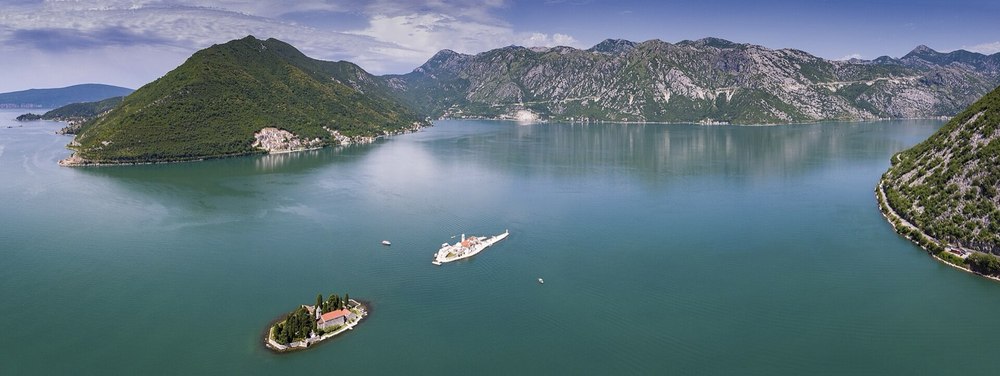
21 – 25 MAY 2027 · MONTENEGRO & CROATIA
Four nights, two countries, one wedding and one birthday.
Pai, here is the trip. Not a brochure — the actual plan, with the parts we still get to decide together left open for you.
We land on the Bay of Kotor on the Friday, a deep green bay with grey mountains falling straight into it. Saturday belongs to the wedding. Sunday is my birthday, and I want to spend it in Perast, which is one street of stone palaces facing two tiny island churches. Then we cross into Croatia and finish in Dubrovnik — a city you have never seen, and the one place I have been without you that I have most wanted to take you to.
Everything here is about 90 minutes from everything else. We will not need a car and we will not rush. Scroll through, read the bits that interest you, and wherever you see a gold box, tap the option you prefer. I will see what you chose and we decide on the phone.
— Helena
Four nights. We fly into Montenegro, work down the bay, cross the border once on the Monday morning, and fly home out of Croatia. Arriving and leaving from different airports is what keeps it to a single crossing.
| Night | Date | Where | Paid by |
|---|---|---|---|
| 1 | Fri 21 May | The wedding coast | The bride — thank you |
| 2 | Sat 22 May | The wedding coast | The bride |
| 3 | Sun 23 May | Perast, on the bay | Us |
| 4 | Mon 24 May | Dubrovnik | Us |
| — | Tue 25 May | Home by 21:55 | — |
Why four and not five. Four nights is what we have. If I manage to win a fifth, it goes in Dubrovnik — we stay the Tuesday too and fly home Wednesday instead, which turns Tuesday into a real free day. That is the only version where the mountains at Lovćen, or the oysters at Ston, would fit.
Both flights are chosen. I checked the real schedules on 22 October 2026; the fares will move before we book, the flights themselves won't.
| When | Flight | Times | Fare each |
|---|---|---|---|
| Fri 21 May | Air Serbia, Amsterdam → Tivat, via Belgrade (1h15) | 10:00 → 14:35 | ~€176 |
| Tue 25 May | Lufthansa, Dubrovnik → Amsterdam, via Munich (1h40) | 17:05 → 21:55 | ~€192 |
Only TUI flies Amsterdam to Tivat non-stop, and only on Wednesdays and Sundays. easyJet has announced the route, but it does not start until 29 June 2027 — five weeks after we go. So reaching Montenegro from Amsterdam on a Friday means either a connection through Belgrade, or flying into Dubrovnik and driving down.
Montenegro has two airports. Tivat is fifteen minutes from the bay; Podgorica, the capital's, is an hour and a quarter. There is a Podgorica flight that lands at 12:40 and would put us on the bay about half an hour earlier — but it leaves Amsterdam at 07:00 instead of 10:00 and costs more. Three hours of sleep for thirty minutes is a bad trade.
Why it matters which airport. Croatia is in Schengen, Montenegro is not, so there is passport control in both directions. In late May the crossing at Debeli Brijeg runs 45 minutes to two hours on a weekday, and much longer at weekends — which is exactly why we cross on a Monday morning, and only once.
Five days on the ground, Friday to Tuesday. The cruise ships are the one thing both Kotor and Dubrovnik have in common: day visitors fill the old towns from about 10am to 4pm, so everything below is arranged around being somewhere else at those hours.
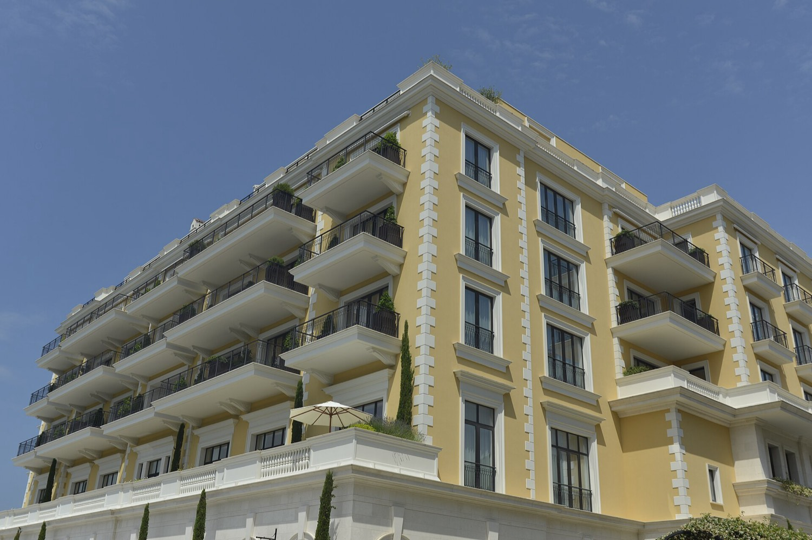
Land, meet, and go nowhere in particular. Dinner by the water and an early night, because Saturday is a wedding.
If we are anywhere near Tivat, the promenade at Porto Montenegro is a gentle first walk — flat, lit, and about twenty minutes end to end.
What you are walking on. This marina was a naval base: first Austro-Hungarian, then Yugoslav. The submarine pens are still cut into the hillside nearby. The yachts arrived in the 2000s.
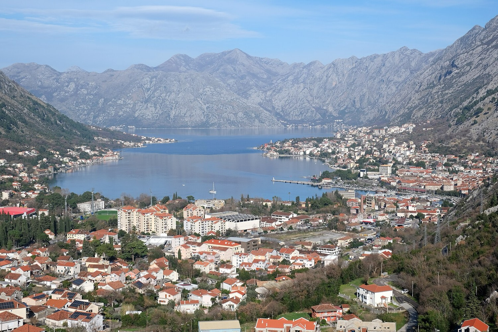
Sleep in. Swim if you are brave — the sea is about 18 °C in late May, which is colder than it looks.
The wedding, and then dancing. Nothing else is planned, deliberately.
Not a fjord. Everyone calls this Europe's southernmost fjord. It isn't one — a fjord is carved by ice, and this is a river canyon that the sea flooded. The correct word is a ria, and it is why the water goes down so steeply so close to shore.
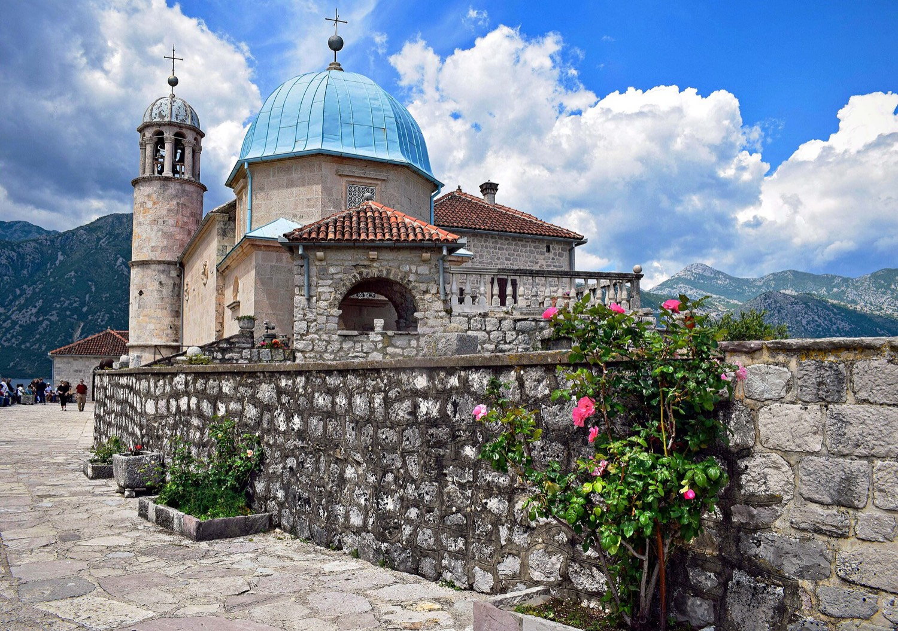
Late breakfast, then over to Perast. From the Tivat side the Kamenari–Lepetane ferry cuts the drive to about forty minutes — ten of them on the water.
A small boat out to Our Lady of the Rocks. Better: hire a private boat for an hour and go slowly round the bay instead of in a queue.
Golden hour on the waterfront with a glass of local wine. The whole village is one street long, so nothing is more than four minutes away.
Birthday dinner — booked months ahead, because Perast is tiny.
The island is handmade. Sailors built it, stone by stone, around a rock where an icon was found in 1452 — dropping rocks and eventually scuttling captured ships on the spot. They still do it: every 22 July the village rows out at sunset and throws more stones in. Inside the church hangs a tapestry a woman named Jacinta embroidered over twenty-five years while waiting for her sailor to come home, using gold thread and her own hair. He did not come back.
Perast puts us on the water with dinner two minutes away. Huma is fifteen minutes off, more hotel than village, with pools facing the bay. I genuinely don't mind — so you pick.
All three are on or near the water. One is a chef's restaurant, one is a family's, one is a four-hundred-year-old mill in the next bay along.
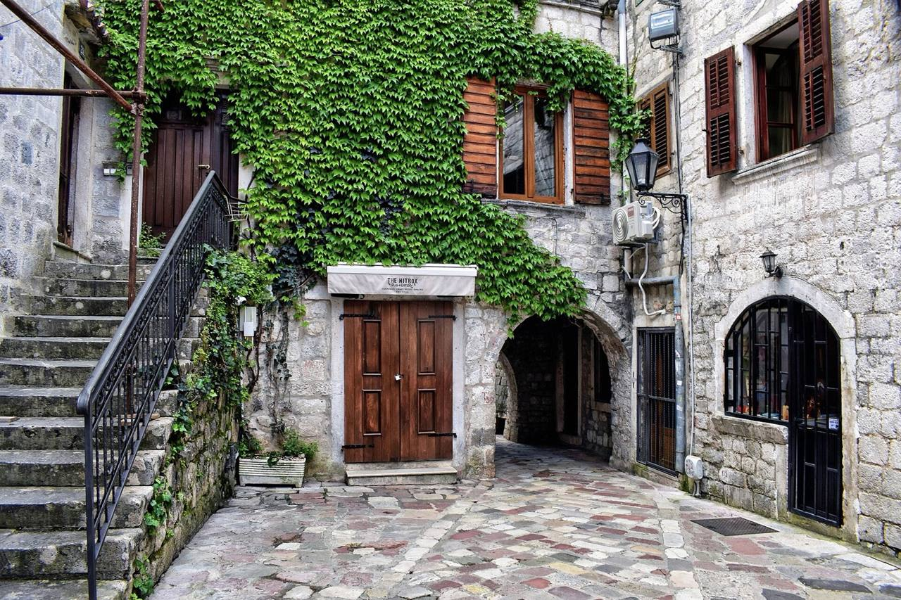
Kotor's old town before the ships: in through the Sea Gate, the 12th-century cathedral of St Tryphon, coffee on a square with nobody on it.
A private driver round the bay. Coffee in Herceg Novi, where Ivo Andrić spent what he called his happiest years — his house there is a small museum, and he is the first of the three books below.
The border. Monday morning is the gentlest slot of the week.
Check in, lie down, ice cream. We have earned a flat hour.
The city walls as the crowds thin and the stone turns gold. Two kilometres, one to two hours, about 1,190 steps, last entry 6pm in May.
Dinner. Either Restaurant 360, which has a Michelin star and sits inside the walls above the old harbour, or something small and unbothered in a side street.
Kotor runs on cats. They are everywhere, they are fed by everyone, and there is a small museum devoted to them. The story goes that they came off the ships and were kept for the same reason ships kept them.
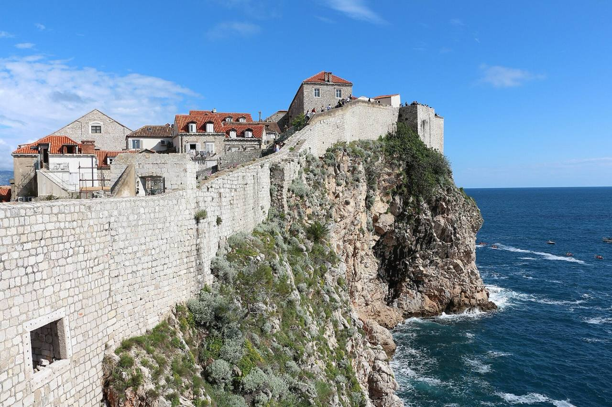
Coffee on the Stradun before the day-trippers land. At that hour the limestone is still wet from being washed and the whole street is a mirror.
The morning is ours — there is a choice below.
A long lunch. Either inside the walls, or at Nautika by the Pile Gate, in the old maritime school with Fort Lovrijenac across the water.
To the airport. 17:05 to Munich, and into Amsterdam at 21:55.
A republic that ran on paperwork. Ragusa — Dubrovnik's own name for itself for six hundred years — kept its independence by being useful to everyone and threatening to no one. It set up one of the first formal quarantines in Europe in 1377: thirty days on an island before you were allowed in, later forty, which is where the word comes from. It banned the slave trade in 1416. Above the gate of Fort Lovrijenac is still carved: freedom is not to be sold for all the gold in the world.
We have from breakfast until about half past one. Enough for one proper thing, not two.
One night only, so it matters where it is. Both are a few minutes from the walls.
Not a to-do list. Just the four that are worth stopping at, in the order we meet them.
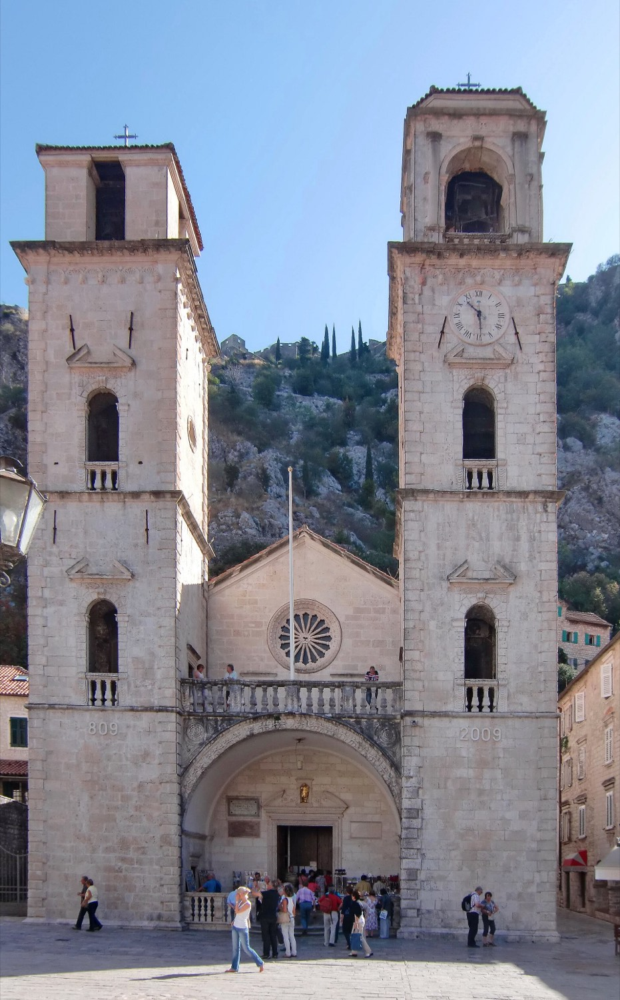
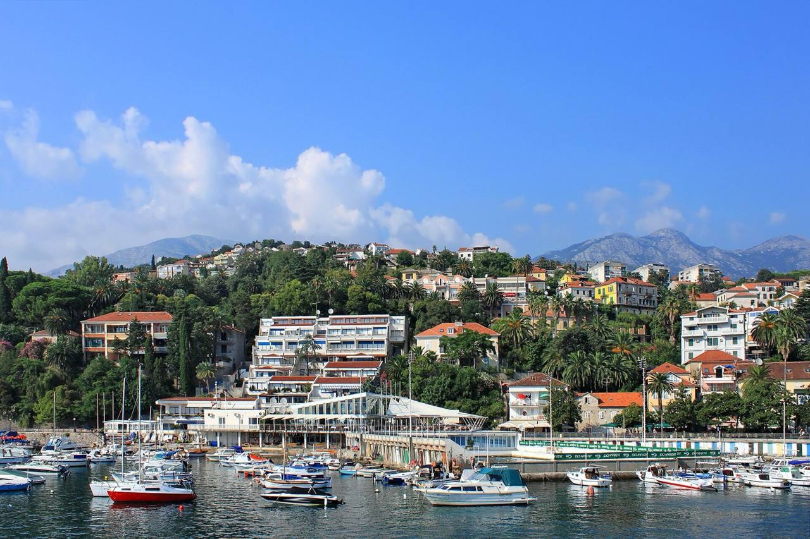
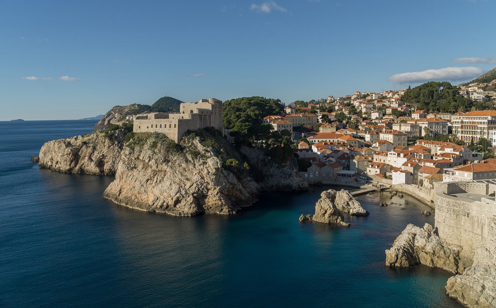
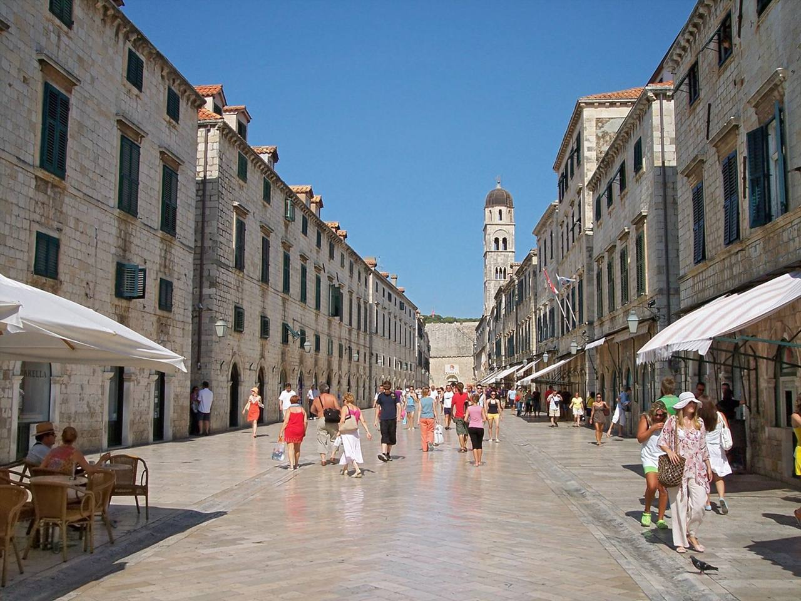
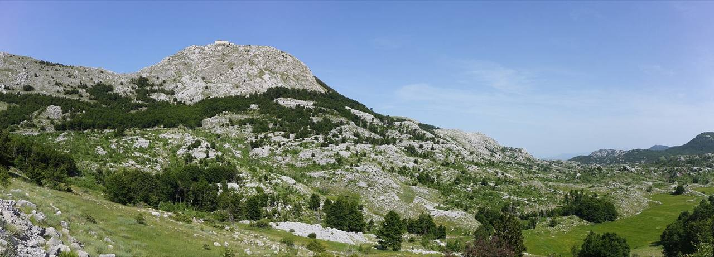
The old road out of Kotor climbs twenty-five numbered hairpin bends to Njeguši — a village known for smoked ham and mountain cheese, and as the birthplace of Njegoš — and then into Lovćen National Park. At 1,657 m, at the top of 461 steps, is his mausoleum: granite caryatids, a vast view over the bay on one side and the mountains on the other. He was a prince-bishop, a poet, and by all accounts about 1.9 m tall.
Down the far side is Cetinje, the old royal capital — a town of a few thousand people that once had the embassies of Russia, Britain, France and Austria-Hungary on one street. The buildings are still there.
This needs a whole day, and at four nights we do not have one to give. It is the first thing I would add if the fifth night comes through — or the reason to come back.
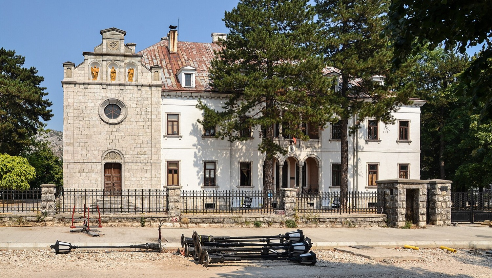
An hour north of Dubrovnik, five kilometres of medieval wall built to guard the salt pans that paid for the republic, and oysters pulled out of Mali Ston bay, farmed there since Roman times. A half-day trip, about five hours — so it needs a free day too.
Durmitor and the Tara canyon, Lake Skadar, and the monastery at Ostrog built into a cliff face. All extraordinary, all several days away from what we have. Another trip.
Tap the options you like anywhere on this page and they collect here. Say who you are first, then send me your picks when you have been through it.
How this works. Your picks are kept in your own browser on your own phone — nothing is sent anywhere until you press send, and nobody else can see them. There is no account and nothing to log in to.
A Brazilian passport needs no visa for a short stay in either country, but it has to be less than ten years old and still valid for three months after 26 May 2027. Worth checking the date this week rather than in April.
Entering Croatia you will be registered under the EU's new EES system — passport, four fingerprints and a photo, done at the booth. They no longer stamp passports. ETIAS, the €20 online permit, was still not running as of October 2026 and is expected some time in 2027 with a six-month grace period. I will check the official site in January and tell you if anything is needed.
Around 23 °C in the day, 15 °C at night, sea about 18–19 °C. Green, not yet hot, and showers are possible — a little more often inside the bay, where the mountains catch the cloud.
Both countries use the euro, which makes this simpler than it has any right to be. Cards work nearly everywhere, and the Dubrovnik walls are card-only.
Shoes with grip above everything else — polished limestone is genuinely slippery, and the walls alone are 1,190 steps. A light jacket for evenings on the water. A hat: there is no shade at all up on the walls. Swimsuit, in case you are brave. The wedding outfit. A contactless card.
Not a rolling suitcase, if we end up sleeping inside Dubrovnik's walls — the old town is stepped, car-free, and wheels on that stone are discouraged.
| Nights | Where | Status |
|---|---|---|
| Fri 21 + Sat 22 | The wedding coast | Hosted — thank you, bride |
| Sun 23 | Perast, or Huma at Dobrota | Your choice above. Book first: it is the scarcest night of the trip |
| Mon 24 | Dubrovnik — inside the walls, or Ploče | Your choice above. One night only |
All in English, all available in Brazil, and all about this exact coast. The first one is the reason we stop in Herceg Novi.
Four centuries of one Bosnian town, told entirely through the stone bridge at its centre. It won him the Nobel Prize in 1961. We pass his house on the Monday.
The great travel book about this part of the world, written on the edge of the war that ended it. It is enormous — read the Dalmatia and Montenegro chapters and leave the rest.
Montenegro's national epic, by the poet-prince buried on Lovćen. Short, strange, and much better if we end up taking the mountain day.